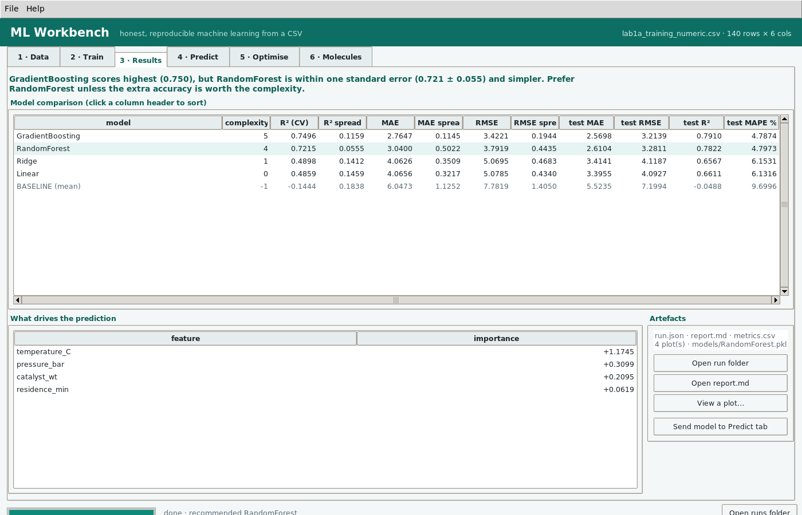
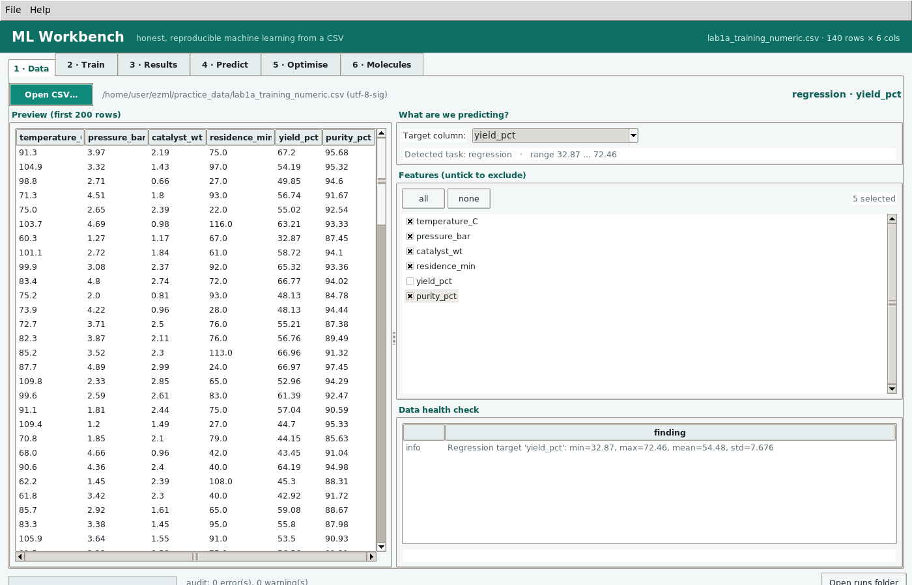
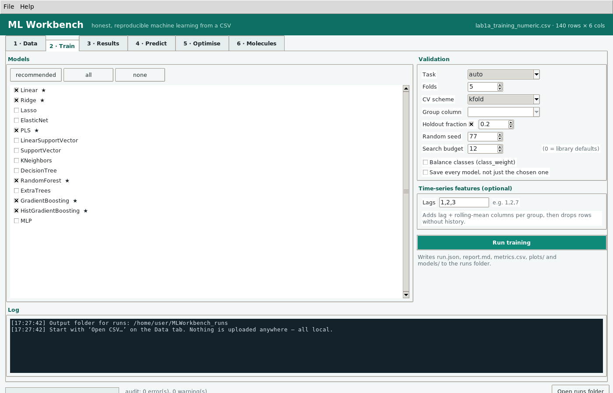
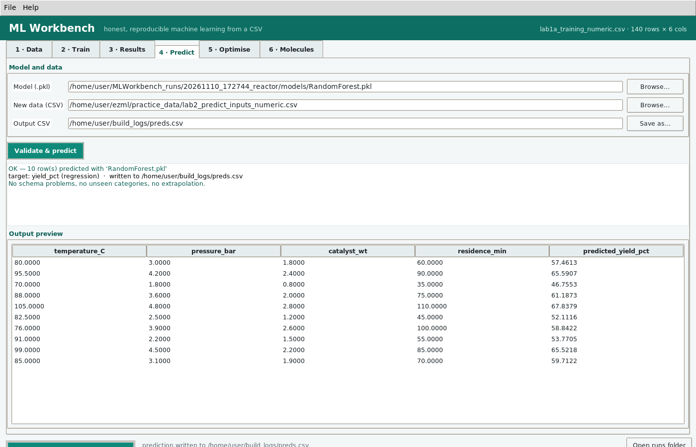
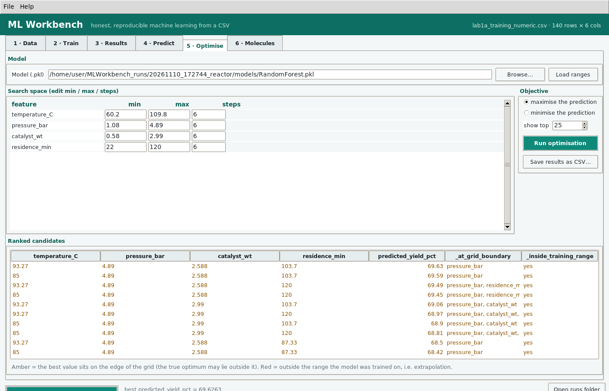
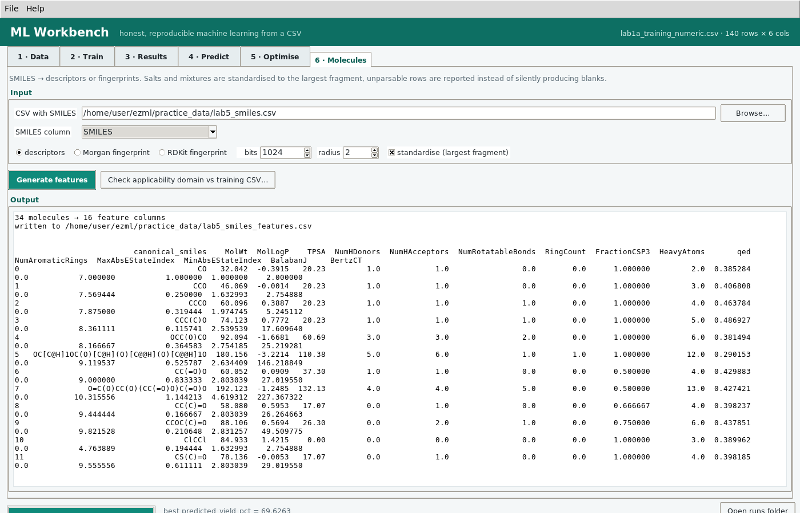

Machine learning you can actually defend.
Point ML Workbench at a CSV, pick the column you want to predict, and get a model with a baseline to beat, an untouched holdout, and a written record of every choice it made. No code, no cloud, no account.
One 113 MB .exe — nothing to install, nothing to download afterwards.
Windows 10/11 · Python, scikit-learn and RDKit bundled inside · works fully offline.

Most GUI ML tools hand you a number. This one hands you the evidence.
A score without a baseline is a rumour. ML Workbench was built to fix the specific things that go wrong when you click your way to a model — and then to write down what happened so you can show someone else.
| The usual failure | What a typical GUI tool does | What ML Workbench does |
|---|---|---|
| You can't tell if 0.72 is good | Reports R² with nothing to compare it to | ✓Always trains a baseline and pins it in the results table |
| Preprocessing drifts between training and prediction | Saves the model, forgets the one-hot encoder | ✓Every model is one sklearn Pipeline — impute, encode, scale, estimate — pickled as a single object |
| The reported score is quietly optimistic | Tunes and scores on the same folds | ✓Optional holdout never touched by tuning, reported in its own columns |
| You picked the most complex model by accident | Ranks by score only | ✓1-SE rule — recommends the simplest model within one standard error of the best, and says so in a sentence |
| Missing values crash the run or vanish silently | Drops rows without telling you | ✓Imputation inside the pipeline, plus an audit that flags columns too sparse to save |
| Leakage you never noticed | Nothing | ✓Audit catches ID-like columns, duplicate rows, target copies (>0.995 correlation), constants, label drift |
| You can't reproduce it next month | A screenshot in a slide | ✓Every run writes run.json with all settings, seed, library versions and the sha256 of your data |
| Predicting on new rows gives nonsense | No warning at all | ✓Applicability domain checks: out-of-range rows flagged, unseen categories counted, Tanimoto similarity for molecules |
Everything a screening job needs, nothing it doesn't.
Data audit before training
Encoding and delimiter detected, then a health check in plain language: red means must fix, amber means judgement call.
Baseline, always
A DummyRegressor or majority-class classifier is trained every run, so your score has a floor to stand on.
Honest holdout
Stratified, opt-in, and never used for tuning. It appears in its own columns so you can see the optimism gap.
Time series & grouped CV
TimeSeriesSplit, group-aware folds, and a lag/rolling feature builder — forecasting in a few clicks.
Molecules, not afterthoughts
SMILES in, 15 RDKit descriptors or Morgan/RDKit fingerprints out, with salt stripping, canonicalisation and unparsable rows reported.
Optimiser that warns you
Sweep ranges, rank by predicted response, and get told when the best point sits on a boundary or outside the training range.
Interpretation included
Permutation importance that works with named columns, plus coefficients for linear models, each with plots.
A run folder you can file
report.md, metrics.csv, run.json, plots, and the pickled pipeline. Paste the report into a lab book.
The same engine on the CLI
mlw train / predict / optimise / audit / smiles for scripts and CI — no GUI required, same results.
Six tabs, in the order the work actually happens.
Click any screenshot to open it full size.





A folder, not a screenshot.
Each run writes everything needed to defend the result — including the hash of the exact data that produced it, so a later "why did this change?" has an answer.
├── run.json # settings, seed, versions, data sha256 ├── report.md # human-readable summary ├── metrics.csv # the comparison table ├── feature_importance.csv ├── holdout_predictions.csv # actual vs predicted ├── models/RandomForest.pkl # pipeline + estimator, one object └── plots/ ├── predicted_vs_actual.png ├── confusion_matrix.png ├── residuals.png ├── correlation.png └── importance.png
The GUI is optional.
The same engine runs headless. Audit a drop folder, retrain nightly, or score new rows in a pipeline — then reuse the saved model in plain Python without this app at all.
MLWorkbench.exe <args> runs the identical commands and attaches to the
calling console.
mlw audit data.csv --target yield
mlw train data.csv --target yield --search 20 --holdout 0.2
mlw train data.csv --target grade --models Logistic,RandomForest --balance
mlw train sales.csv --target sales --lag 1,2,7 \
--group store --sort-by date --time-series
mlw predict runs/xxx/models/RandomForest.pkl new.csv -o preds.csv
mlw optimise runs/xxx/models/RandomForest.pkl --maximise \
-r temperature_C:70:110:9 -r pressure_bar:1:5:5
mlw smiles molecules.csv --column SMILES --mode morgan --bits 2048
import joblib, pandas as pd bundle = joblib.load("models/RandomForest.pkl") model = bundle["pipeline"] # preprocessing included model.predict(pd.read_csv("new.csv")[bundle["features"]])
Paid help, when you'd rather ship than learn.
ML Workbench stays free and MIT forever. These are the things people ask for after downloading it — priced so a single answered question is cheap and a whole project isn't a surprise.
Setup & walkthrough
A 60-minute screen share on your own data.
- We load your CSV together and read the audit
- Set up training, holdout and search budget properly
- Interpret the results table and report.md
- Recording and notes afterwards
Analysis on your data
You send a CSV and the question; you get the whole run folder back.
- Audit, feature review and leakage check
- Trained models, baseline and honest holdout
- report.md, plots and the reusable
.pkl - Plain-language findings, plus a call to walk through it
Custom build
When your workflow needs more than the app does out of the box.
- New models, metrics or imports (Excel, SQL, LIMS exports)
- Branded build for your lab or team
- Batch scoring scripts and scheduled runs
- Documentation and handover
Prices are in USD, quoted before work starts, and payable by card or bank transfer. Not sure which you need? Describe your data in one message and I'll tell you honestly if a $90 session is enough — or if the free app already does the job.
Including the uncomfortable ones.
Is it really free? What's the catch?
Really free, MIT licensed, no account, no trial timer, no telemetry. The app contains no network code at all — you can audit that in the source, and the built binary never opens a socket.
There is no catch, but there is a business model: the software is the free part and the paid part is my time helping people use it. That keeps the incentives honest — the app never needs to be crippled to sell you something.
Windows says the app is unsigned. Should I worry?
That is SmartScreen reacting to an unsigned binary, not to anything it found. Code signing certificates cost several hundred dollars a year, which is hard to justify for a free app, so the download is published with a SHA-256 hash you can check yourself:
certutil -hashfile MLWorkbench.exe SHA256 — compare it to the value printed on
the release page and in the user guide. If it matches, the file is exactly the one that was
built from this repository.
Is my data sent anywhere?
No. Everything runs locally in the desktop process. There is no upload, no licence check, no crash reporting, no analytics. This is checked by searching the source for network imports, and it is a deliberate design choice for lab, clinical and industrial data that cannot leave the building.
Will it run on macOS or Linux?
From source, yes — it is plain Python with tkinter, and the engine has no Windows dependency. The packaged single-file build is Windows-only because that is where the demand is. If you need a Mac or Linux binary, ask: a build is a small job, and it is on the roadmap.
Can it replace my notebook / R / Python scripts?
Not for everything, and it does not pretend to. It covers the 80% of tabular work that is screening, model comparison and prediction. If you need custom feature engineering, text or image models, survival analysis or Bayesian inference, you want a notebook — and the app's run folder is designed to hand your results over to one cleanly.
How is this different from a much bigger platform?
The big platforms are excellent if you have data already in their warehouse and a team to run them. ML Workbench is for the person with a CSV on a laptop and a deadline: it installs by double-clicking, works on an air-gapped machine, and produces a defensible record of exactly what it did.
What are the real limitations?
The honest list, kept in the README and not buried here: hyperparameter search and scoring share folds, so CV scores are mildly optimistic — the holdout column is the unbiased number. Trees, fingerprints and descriptor models cannot extrapolate, and the app warns rather than pretends. The optimiser predicts, it does not experiment, so confirm top conditions for real. Molecule standardisation is deliberately simple and does not normalise tautomers or charges.
Bring a CSV. Leave with a model you can explain.
Free, offline, MIT licensed, and 113 MB of nothing-but-the-app.
82-page beginner guide included · sample data bundled · CLI for automation